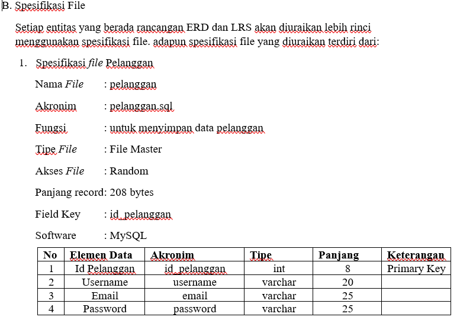

💻Analisis Penjualan Super Store (source data:Kaggle)
- Menggunakan Tools Anaconda Vanigator tepatnya Jupiter Notebook.
- Melakukan Koneksi Python ke Database (Mysql) menggunakan library mysql.connector.
- Melakukan Load Data menggunakan library pandas.
- Melakukan Explorasi data untuk menghindari data kosong/tidak lengkap.
- Melakukan Data Cleaning untuk pembersihan data
- Melakukan Analisis data.
- Melakukan Visualisasi data menggunakan library matplotlib.pyplot.
💻 Sistem Informasi Penjualan Baju
- Melakukan analisis kebutuhan dan menyusun project charter.
- Melakukan pengujian sistem serta mendukung tahap pengujian awal.
🚀Melakukan Pengujian Web Menggunakan Black Box Texting
- Melakukan pengujian fitur website untuk menghindari kesalahan sistem berjalan.
- Mendokumentasi pengujian dengan mencatat skenario pengujian, test case, hasil yang diharapkan, hasil pengujian, dan kesimpulan.
🔬 Analisa & Perancangan Sistem
- Melakukan analisis kebutuhan sistem sistem
- Merancang spesifikasi database sistem.
